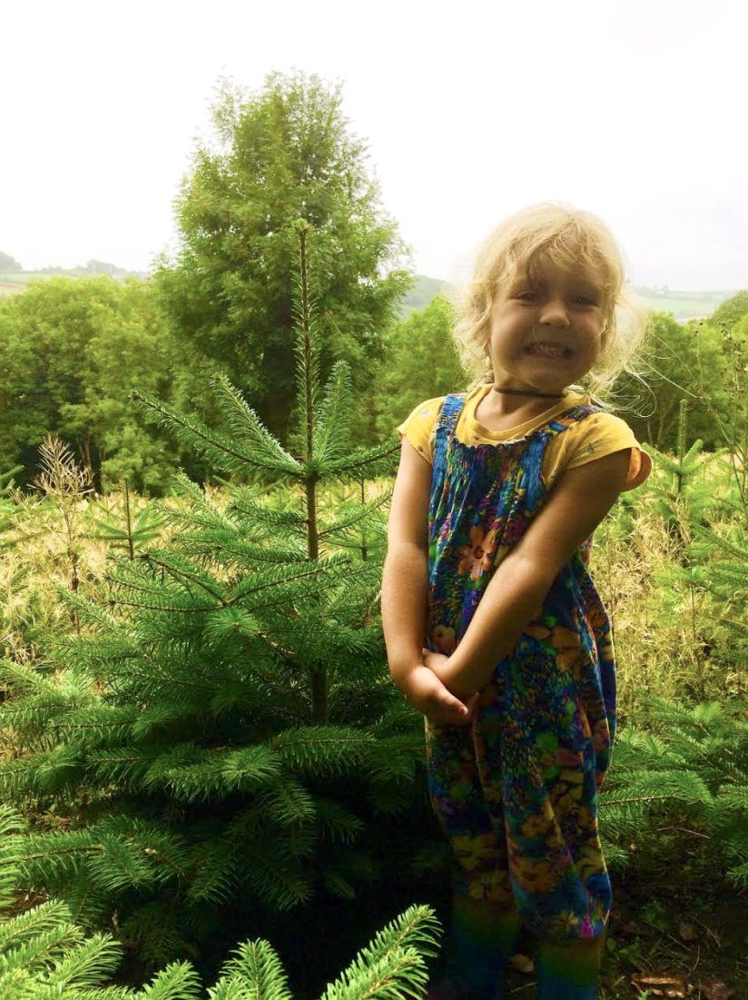

Locally grown in Devon
Welcome to Torridge Christmas Trees!
Fresh Nordmann firs from our own 10-acre farm, cut within 48 hours of reaching our stalls.
Who we are
A real tree, grown just down the road
Here’s a little bit about who we are and what we do. Please, take a look. We hope we have what you’re looking for.
Torridge Christmas Tree farm is a 10-acre farm that overlooks the River Yeo. It was established in 2014 by Simon, Alex and Ken, and where there was once overgrown Cherry Laurel, there are now rows of Christmas trees.

Fresh
All our trees are cut within 48hrs of arriving at our stalls, for quality and that great Christmas tree smell.
Local
Most Christmas trees in Britain come from Scandinavia, Germany and Scotland. Ours are grown in Devon, by a local independent business.
Lower carbon
The Carbon Trust state that a real Christmas tree has a significantly lower carbon footprint than an artificial tree.
Nordmann fir
Evenly shaped with soft, glossy needles, a joy to decorate and a fine choice if you suffer from allergies.
Prices & options
This season’s tree sizes, prices, stands and delivery options are all in our order form. Choose what you’d like and we’ll take care of the rest.
Questions? Ordering for a school or wholesale?
For any of your Christmas tree enquiries, private or wholesale, email torridgetrees@gmail.com or call Simon on 07989970050, and we will be happy to assist you.
Many thanks and Happy Christmas!!